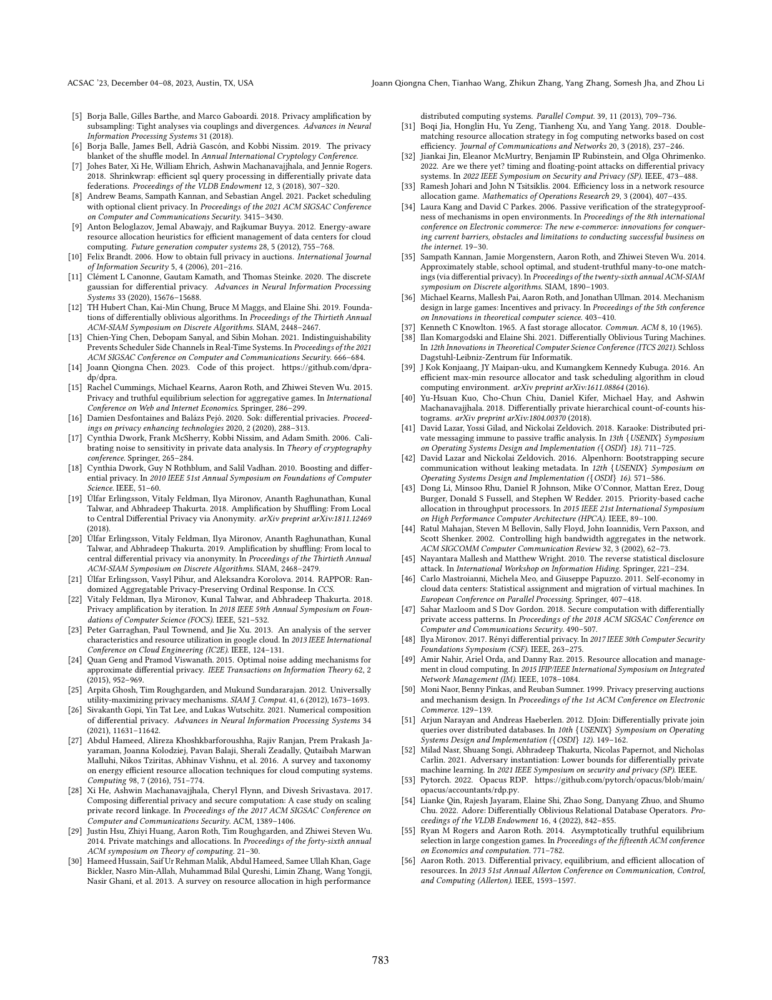

Differentially Private Resource Allocation
ACSAC 2023

Abstract
view of standard RA and describe its involved parties and procedure. Then, we describe the attackers’ goals and capabilities in RA. The frequently used notations are defined in Table 1. RA Parties and Procedure. Our abstraction of standard RA considers a scenario where an allocator allocates resources based on the requests submitted by a number of clients. The allocator can contain one server or a group of servers for fault-tolerance. In the setting of data center, the allocator can be a virtual machine manager (VMM), and the client can be a data center tenant. In the Notation Description 𝐷, 𝐷 ′ Neighboring datasets differing in one victim 𝑘 Number of available resources 𝑚 Number of compromised clients 𝑑 Number of noisy requests (can be negative) 𝑦 Number of resources dispatched to attacker 𝑥ℓ , 𝑥𝑟 , 𝑝, 𝑠, 𝜇 Parameters of the noisy mechanisms Table 1: Notations frequently used in this paper. Allocator Request Clients compromised by attacker Victim Resource granted Figure 1: An example of RA. An allocator has six resources and the total number of requests sent by attacker is six. Privacy of the victim is violated when the attacker observes one of the requests is not fulfilled. setting of MPM, where two users can set up a call in a private way, the allocator can be a callee and the client can be a caller. Regarding the RA procedure, we assume it takes rounds of in- teractions between the allocator and the clients. In each round, the allocator receives requests from its clients for resources (e.g., CPUs in a cloud and communication channels to be allocated to a caller in MPM) and makes the best efforts to serve the requests. Hence, for each request, the allocator either accepts it and allocates the resources, or rejects it when all resources have been occupied. Following prior work [ 3], we assume the quantity of the re- sources is a limited number 𝑘, and all resources are identical. Each round, some clients send requests, and each request asks for one piece of resource. Because the resources are identical, the requests are also identical (except the requesters’ IDs). We note that some as- sumptions can be relaxed (e.g., resources are not identical and each client.
Resources
Citation
@inproceedings{CWZZJL23,
author = {Joann Qiongna Chen and Tianhao Wang and Zhikun Zhang and Yang Zhang and Somesh Jha and Zhou Li},
title = {{Differentially Private Resource Allocation}},
booktitle = {{ACSAC}},
publisher = {ACM},
year = {2023},
}